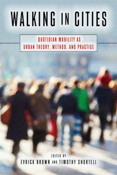

<body bgcolor="#FFFFFF" text="#000000" link="#0000FF" vlink="#CC0000" alink="#CC0000"><center><hr width="350" size="1" align="center" noshade>Making the case for urban walking as a significant social activity and as a method for studying urban communities<hr width="350" size="1" align="center" noshade><p><a href="https://cdcshoppingcart.uchicago.edu/Cart/ChicagoBook.aspx?ISBN=9781439912201&&PRESS=temple" target="_top">Buy this book!</a> | <a href="https://cdcshoppingcart.uchicago.edu/Cart/Cart.aspx?PRESS=temple" target="_top">View Cart</a> | <a href="https://cdcshoppingcart.uchicago.edu/Cart/Cart.aspx?PRESS=temple" target="_top">Check Out</a></p><p></p></center><!--none//--><h1>Walking in Cities</h1>
<H2>Quotidian Mobility as Urban Theory, Method, and Practice</H2>
<h3>edited by Evrick Brown and Timothy Shortell</h3>
<P>cloth 1-4399-1220-3 $89.50, Dec 15, <FONT COLOR=#990033>Available</FONT>
<br>paper 1-4399-1221-1 $34.95, Dec 15, <FONT COLOR=#990033>Available</FONT>
<br>Electronic Book 1-4399-1222-X $34.95 <FONT COLOR=#990033>Available</FONT>
<BR> 292 pp
6 x 9
9&nbsp;tables 1&nbsp;map(s) 3&nbsp;halftones
</P><BLOCKQUOTE><I>"</i>Walking in Cities<i>�is a very interesting and nuanced collection. Its most outstanding strength is the way each chapter shows how everyday interactions are connected to, affect, and are affected by larger social-structural forces like race, ethnicity, gender, class, and power. In this way, it becomes clear that walking�and the ways and uses of walking�are not always the same for all people in all places. In fact, walking becomes a useful lens for looking at a variety of cultural issues that influence the ways that people live in cities quite literally from the ground up."</i> <br>&#151<b>Michael Ian Borer</b>, Associate Professor of Sociology at the University of Nevada, Las Vegas</I></BLOCKQUOTE>
<P>Walking connects the rhythms of urban life to the configuration of urban spaces. As the contributors and editors show in <i>Walking in Cities</i>, walking also reflects the systematic inequalities that order contemporary urban life. Walking has different meanings because it can be a way of temporarily �taking possession� of urban space, or it can make the relatively powerless more vulnerable to crime. The essays in <i>Walking in Cities</i> explore how walking intersects with sociological dimensions such as gender, race and ethnicity, social class, and power.
<P>Various chapters explore the fl�neuse, or female urban drifter, in Tehran�s shopping malls; Hispanic neighborhoods in New York, San Diego, and El Paso; and the intra-neighborhood and inter-class dynamics of gentrification in Greenpoint, Brooklyn. The essays in <i>Walking in Cities</i> provide important lessons about urban life.
<P><I>Contributors include: Nazgol Bagheri, Terry Nichols Clark, Judith N. DeSena, Marlese Durr, Michelle Hall, Brian Knudsen, Shanshan Lan, Daniel Silver, Paul R. Watts, Amber N. Wiley, Kristen A. Williams, Rebecca Williamson, and the editors.</I>
<BR>&nbsp;<h2>Excerpt</h2><P>Excerpt available at <a href="http://www.temple.edu/tempress">www.temple.edu/tempress</a></p>
<BR>&nbsp;<h2>Reviews</h2>
<p><i>"Brown and Shortell's compilation presents a range of contemporary research pertaining to the experience of walking in urban places. The authors examine different meanings of walking for people in a variety of cities and the implications of related everyday interactions in these settings to such important social variables as race, ethnicity, socioeconomic class, and gender. Instead of focusing on walking in only one type of place, it is commendable that the authors have included research from locales ranging from so-called 'world cities' such as Sydney and Washington, DC; megacities including Chicago and Tehran; and smaller regional locales, such as New Orleans, El Paso, and Providence, RI. Contributors discuss walking in different settings within cities as well as including downtowns, suburban landscapes, and barrio neighborhoods in multiple US cities. For the most part, the volume is broadly accessible.... Summing Up: Recommended."</i>
<br>&#151<b><i>Choice</i></b>
<p><i>"The chapters that make up this edited volume demonstrate a keen attentiveness to local histories and are, therefore, able to offer convincing micro-sociological insights into the nature of urban change. Taken together, they demonstrate, with sensitive awareness of the minutiae of ordinary life in cities, the enduring significance of neighborhoods in mediating marginal peoples� access to the resources of urban living.... [T]hrough painstaking description they reveal the relations of domination and resistance in the quotidian through which the urban is constituted." </i>
<br>&#151<b><i>Urban Studies</i></b>
<p><i>"Brown and Shortell�s volume delivers a theoretical and methodological toolkit for thinking about urban rambling.... [The authors] use walking as the subject of deeper analysis of cities and how we engage with urban spaces.... Across the breadth of topics, the volume asks some worthwhile questions.... Some readers might wish that the book stayed more true to the theme, clipping wanderings from the road and from cities (e.g., the first selection is in a Sydney suburb). And yet, somewhat surprisingly, the moments that stray...are equally if not more fascinating." </i><br>&#151<b><i>Contemporary Sociology</i></b>
<BR>&nbsp;<H2>About the Author(s)</H2>
<P><b>Evrick Brown</b> is Assistant Professor of Sociology in the Department of Behavioral Sciences and Human Services at Kingsborough Community College and co-editor (with Timothy Shortell) of <i>Walking in the European City</i>.</P>
<P><b>Timothy Shortell</b> is Professor of Sociology at Brooklyn College, of the City University of New York and co-editor (with Judith N. DeSena) of <i>The World in Brooklyn</i> and (with Evrick Brown) of <i>Walking in the European City</i>.</P>
<BR><H2>Subject Categories</H2>
<p><A HREF="/tempress/sociology.html" TARGET="_top">Sociology</a>
<BR><A HREF="/tempress/urban.html" TARGET="_top">Urban Studies</a>
<BR><A HREF="/tempress/race.html" TARGET="_top">Race and Ethnicity</a>
</p>
<BR><h2 class="inpageheading">In the series</H2>
<P><I><a href="http://www.temple.edu/tempress/urban_life.html" onMouseOver="window.status='Click for other books in this series!'; return true;" onMouseOut="window.status=''; return true;" target="_top">Urban Life, Landscape, and Policy</a></i>, edited by Zane L. Miller, David Stradling, and Larry Bennett.
</p><p><i>Urban Life, Landscape, and Policy Series</i>, edited by Zane L. Miller, David Stradling, and Larry Bennett, features books that examine past and contemporary cities, focusing on cultural and social issues. The editors seek proposals that analyze processes of urban change relevant to the future of cities and their metropolitan regions, and that examine urban and regional planning, environmental issues, and urban policy studies, thus contributing to ongoing debates.</p>
<p align="center"><a href="https://cdcshoppingcart.uchicago.edu/Cart/ChicagoBook.aspx?ISBN=9781439912201&&PRESS=temple" target="_top">Buy this book!</a> | <a href="https://cdcshoppingcart.uchicago.edu/Cart/Cart.aspx?PRESS=temple" target="_top">View Cart</a> | <a href="https://cdcshoppingcart.uchicago.edu/Cart/Cart.aspx?PRESS=temple" target="_top">Check Out</a></p><p><font face="Arial" size="1"><a href="copyright.html" onMouseOver="window.status='Web Copyright Policy';return true;" onMouseOut="window.status=''" title="Web Copyright Policy">&copy;</a> 2017 <a href="http://www.temple.edu" target="new" onMouseOver="window.status='Link to Temple University home page';return true;" onMouseOut="window.status=''" title="Link to Temple University home page">Temple University</a>. All Rights Reserved. http://www.temple.edu/tempress/titles/2351_reg.html</font></p>